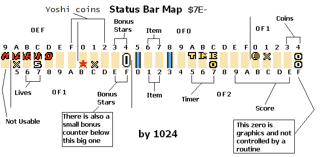

So you want to edit the HUD to display custom info to the player. Obviously, this requires at least basic ASM knowledge. Fear not! Once you got the pattern down, you'll understand how it works!
You should know these before doing this:
Ersanio's tutorial[1][2] on something simple as how to write a value to memory. You should also know about binary and hexidecimal, since many data explained here stored in memory are bitwise (mainly the tile properties).
Understand the mechanics of Asar, such as defines and labels.
I have provided several routines to make writing codes much user-friendly as possible. So lets begin.
Here, consider looking at this image:

RAM address $7E0EF9-$7E0F2E controls what tile to display. How do you modify it? Well you edit the
contents in the mentioned RAM address. There are 2 ways you can edit RAM addresses:
Now hold up, when you play around with the tiles, many tiles will use the wrong palette, well, this is part of the tile properties (in binary, its %YXPCCCTT) that's hard-coded, that's right, there are actually 2 bytes of information for each 8x8 tile with the tile numbers being in ROM and RAM and the properties all being hardcoded. When the level loads, the status bar routine will first transfer default tile number and properties from ROM addresses $008C81-$008CFE, which contains all the tiles for the status bar, while the RAM itself only contain some of the tile numbers. To modify hardcoded tiles, I've already presented their addresses that directly correlates to the RAM addresses, for the top and bottom lines of the item box:
| Coordinate | Address (%TTTTTTTT, %YXPCCCTT) |
|---|---|
| Top line of item box | |
| (14,1) (($E,$1)) | $008C81, $008C82 |
| (15,1) (($F,$1)) | $008C83, $008C84 |
| (16,1) (($10,$1)) | $008C85, $008C86 |
| (17,1) (($11,$1)) | $008C87, $008C88 |
| bottom line of item box | |
| (14,4) (($E,$4)) | $008CF7, $008CF8 |
| (15,4) (($F,$4)) | $008CF9, $008CFA |
| (16,4) (($10,$4)) | $008CFB, $008CFC |
| (17,4) (($11,$4)) | $008CFD, $008CFE |
You may be wondering, why did I include the tile coordinate in these tables? Well, is because of bsnes+'s ability to display the tile coordinates in the tilemap viewer (Debugger → S-PPU →
Tilemap Viewer, and select “3” on the BG.):

and then you can use that coordinate and CTRL+F here on this HTML file to locate what RAM/ROM address to modify, which is way easier than to trial-and-error modifying each address to find the desired location.
I've also provided a patch, DefaultTiles.asm which is intended to be an ASM patch version of the SMW status bar editor tool.
As explained earlier about the palette issue, and that each 8x8 tile possess 2 bytes, I'll give you a summary of the entire tile data:


| TileNumber and Props in their own table | 2-bytes together | |||
|---|---|---|---|---|
Tile numbers and properties are stored in 2 separate tables, one for each. Every time you advance the next byte, you are on the next 8x8 tile. |
Every tile have 2 bytes placed one after another, so both tile numbers and properties are alternating every byte. Therefore, to get to the next 8x8 tile, is a move of 2 bytes instead of one. |
I've made a “friendly hex-edit” patch included in this package called DefaultTiles.asm, which is an alternative to Smallhacker's status bar editor patch.
Because SMW's status bar is extremely limited, other users decided to make status bar patches:
Super Status Bar. This gives you a 32x5 8x8 tile area, therefore 160 8x8 tiles to edit.1
Overworld Border +. Not a “status bar”, but similar in terms of editing the layer 3 8x8 tiles. This gives you 32x!TopLines (for the top of the screen) and 32x!BottomLines (for the bottom of the screen) 8x8 tile area, therefore, up to 224 8x8 tiles you can edit.1 !TopLines is how many lines for the top of the screen, an integer 0-5. !BottomLines is same as previously mentioned, but for the bottom of the screen being an integer 0-2.
Ladida's status bar patches2
Minimalist Status Bars. This shrinks your status bar to 1 or 2 lines of 8x8 tiles. Therefore, 32 or 64 tiles you can edit.
SMB3 Status Bar. True to the name, this replaces SMW's HUD with SMB3's HUD on the bottom of the screen. This gives you a 32x4 8x8 tile area, therefore 128 8x8 tiles to edit
You may be wondering:
Thankfully, I made HTML Javascript files for all of these ASM resources to enable you to search what RAM address of a given tile.
This method assumes you are using uberasm tool to test your code to write to the status bar. The first thing you want to do is have all the ASM files in “StatusBarRoutines” inserted into uberasm tool's “library” folder, and have the entire folder “StatusBarRoutinesDefines” be in the same directory as the uberasm tool exe program is at.
Feel free to look into the library ASM files, since I added descriptions and comments to give a better understanding how they work.
NOTE: most codes provided here do not modify the tile properties in any way, since very unlikely that many hacks would ever modify the tile properties. If you happen to have a display to “overlap” and is using different tile properties, upon switching back to the old display may cause the old display to use the YXPCCCTT data of the new display over it. You can simply fix that by reverting the YXPCCCTT.
You also need to insert the graphic file from this provided ExGFX folder (ExGFX80.bin) if you are wanting to test out the code of displaying the “/” symbol when displaying 2 numbers. It should be inserted as “LG1” on the layer 3 GFX.
Before we start using the subroutines, we will demonstrate how to write tiles that change based on a given info !RAMToMeasure. It's very easy to write a tile that is different depending on a condition using branches:
!StatusBarPosition = $0EF9|!addr !RAMToMeasure = $60 main: LDA !RAMToMeasure BEQ + LDA #$00 BRA ++ + LDA #$01 ++ STA !StatusBarPosition RTL |
!StatusBarPosition = $0EF9|!addr !RAMToMeasure = $60 main: LDA !RAMToMeasure TAX LDA Table,x STA !StatusBarPosition RTL Table: db $xx ;>When !RAMToMeasure = $00 db $xx ;>When !RAMToMeasure = $01 db $xx ;>When !RAMToMeasure = $02 |
But what about other not-so-simple displays? Well, the following shows you how to do that.
To display a single digit, just store the value directly to the tile RAM. Digits are correctly displayed if the value is 0-9. Any above that will display more than just digits.
But how do you display multi-digits on the status bar? Well, you use a subroutine that would wrap each digits just like how our real-world decimal number works (ones place reset every 10s, 10s increases every 100th value, and the 1000s resets every 10000s, and so on). The routine, HexDec converts a given number to binary-coded decimal (BCD, unpacked) to write each digit tiles onto the status bar. Thankfully, the status bar graphic tiles on GFX28 starts with digits 0-9 so you don't have to convert digit numbers to digit graphics.
Do note that all subroutines here will always have leading zeroes stored (either as in the registers for 2-3 digits or as an array of digits for 4+ digit displays) when there are fewer digits than the maximum. If you wanted to remove leading zeroes, I will explain that in the next section.
For the overworld border (assuming you're using the Overworld Border+ patch), which is stored in GFX2A, after calling the HexDec routine, you must add each digit by #$22 (digit graphics are stored as tile numbers $22-$2B), and make sure you are using page 1 and not 0 on the tile properties (example, to display the number “12”, the values must be $01+$22 = $23 for the tens and $02+$22 = $24 for the ones). I'll later explain how to display digits on the overworld border later on this document.
Create a text file, name it StatusBarTest.asm. Edit that text file to include this code:
!RAMToMeasure = $60 ;>RAM address you what to show !StatusBarPosition = $0EF9|!addr ;>Where to write on the status bar incsrc "../StatusBarRoutinesDefines/Defines.asm" main: LDA !RAMToMeasure JSL HexDec_EightBitHexDec STA !StatusBarPosition+(1*!StatusbarFormat) ;>Write 1s place TXA ;>if you are using status bar patches, STX $xxxxxx will not work. STA !StatusBarPosition ;>Write 10s place RTL |
Now save, and insert in either as gamemode under number 14 (level), or level. Then run the tool to apply the changes.
Test the game (using a debugger, bsnes+) by going to the level that you inserted this created ASM file (or any level if using gamemode 14), you should see the digits displayed on the HUD. Again, palettes, X/Y flips and other weird shenanigans can happen if you use SMW's vanilla status bar without editing the default values. Now depending on what RAM to use set by !RAMToMeasure, it could display 00 or [<digits 0-9 or glitched tile here><digits 0-9>], then on the debugger window, go to memory editor and search for the RAM you set for !RAMToMeasure (example: 60), edit the value in that byte to be any values $00-$63. It should display their decimal version of the hex number:
| Hex bytes | Displayed |
|---|---|
| $09 | 09 |
| $0A | 10 |
| $0B | 11 |
| ... | |
| $61 | 97 |
| $62 | 98 |
| $63 | 99 |
| $64 | A0 |
| $65 | A1 |
| $66 | A2 |
| (10s place digit cycles through the alphabet characters every 10th value until...) | |
| $FF | P5 |
You can fix this problem and make it allow the full range of the 8-bit value by after writing the ones digit, TXA, then call the routine again, and after that, A is the 10s, and X is the 100s place:
!RAMToMeasure = $60 ;>RAM address you what to show !StatusBarPosition = $0EF9|!addr ;>Where to write on the status bar incsrc "../StatusBarRoutinesDefines/Defines.asm" main: LDA !RAMToMeasure JSL HexDec_EightBitHexDec STA !StatusBarPosition+(2*!StatusbarFormat) ;>Write 1s place TXA ;>Call again to get the 10s and 100s. JSL HexDec_EightBitHexDec STA !StatusBarPosition+(1*!StatusbarFormat) ;>Write 10s place TXA ;>STX $xxxxxx don't exists. STA !StatusBarPosition ;> Write 100s place RTL |
Do note that this method have a cost: The higher the number to convert to BCD, the more subtractions by 101 → (NumberOfDigits-1) it would take to get all the digits outputted, not really harsh since this is 8-bit, so up to 25 iterations for a 2-digit (plus up to 2 more for 10s and 100s by calling the HexDec routine again). However, if you DO want speed, do this instead. This works from left-to-right by repeatedly subtracting 100 until A is 0-99. The number of subtractions is now how many 100s for the 100s digit, after that, with A being 0-99, we do the same but with 10s (how many 10s) instead of 100s to find how many 10s. After that, A is 0-9 which is already the ones place:
!RAMToMeasure = $60 ;>RAM address you what to show !StatusBarPosition = $0EF9|!addr ;>Where to write on the status bar incsrc "../StatusBarRoutinesDefines/Defines.asm" main: LDA !RAMToMeasure JSL HexDec_EightBitHexDec3Digits ;>Obtain 3 digits in A, X and Y. STA !StatusBarPosition+(2*!StatusbarFormat) ;>Write 1s place TXA ;\Write 10s place STA !StatusBarPosition+(1*!StatusbarFormat) ;/ TYA ;\Write 100s place. STA !StatusBarPosition ;/ RTL |
What about if I wanted to convert 16-bit numbers (or if you have 3-4 digits and want to go above 255)? Well, good news for you, I've provided more than just 8-bit HexDec converters. Here is the code in question (up to 65535). Example, RAM $60 contains the value $1234 (in memory, its $34, $12), I write my 16-bit number to address $00-$01, then call the subroutine SixteenBitHexDecDivision after that, the digits of 4660 are stored. Note that this is ordered in decreasing significant decimal digits (last byte = 1s, second-last = 10s...):
| Define relative address | RAM address (normal/Sa-1) | Output value |
|---|---|---|
| !Scratchram_16bitHexDecOutput+0 | $02/$04 | $00 (represents “0” for 10000s place) |
| !Scratchram_16bitHexDecOutput+1 | $03/$05 | $04 (represents “4” for 1000s place) |
| !Scratchram_16bitHexDecOutput+2 | $04/$06 | $06 (represents “6” for 100s place) |
| !Scratchram_16bitHexDecOutput+3 | $05/$07 | $06 (represents “6” for 10s place) |
| !Scratchram_16bitHexDecOutput+4 | $06/$08 | $00 (represents “0” 1s place) |
!RAMToMeasure = $60 ;>RAM address you what to show !StatusBarPosition = $0EF9|!addr ;>Where to write on the status bar !NumberOfDigitsDisplayed = 5 ;>How many digits, enter 1-5 (pointless if you enter less than 3). incsrc "../StatusBarRoutinesDefines/Defines.asm" main: REP #$20 LDA !RAMToMeasure ;\Submit the value into $00-$01, the input to convert the raw binary value into BCD, unpacked. STA $00 ;/ SEP #$20 JSL HexDec_SixteenBitHexDecDivision ;Write to status bar if !StatusbarFormat == $01 LDX.b #(!NumberOfDigitsDisplayed-1) - LDA.b !Scratchram_16bitHexDecOutput+$04-(!NumberOfDigitsDisplayed-1),x STA !StatusBarPosition,x DEX BPL - else LDX.b #((!NumberOfDigitsDisplayed-1)*2) LDY.b #(!NumberOfDigitsDisplayed-1) - LDA.w (!Scratchram_16bitHexDecOutput)+$04-(!NumberOfDigitsDisplayed-1)|!dp,y STA !StatusBarPosition,x DEY DEX #2 BPL - endif RTL |
Greater than 65535? (unlikely for other stuff besides a huge currency counter or custom score). This one is a 32-bit HexDec, up to
4,294,967,295 ($FFFFFFFF) can be properly displayed. Remember, this is little endian, for example: a number
$11223344 must be inputted as
[$44, $33, $22, $11] into $00-$03 and should output as [$02, $08, $07, $04, $05, $04, $00, $02, $00] in
!Scratchram_32bitHexDecOutput.
Here is an example using the previously mentioned number, with !MaxNumberOfDigits set to 9, using default !Scratchram_32bitHexDecOutput.
Again, the digits stored in each bytes are ordered in decreasing significant decimal digits (last byte is always
the 1s place, regardless of !MaxNumberOfDigits's value)
| Define relative address | Default RAM address (normal/Sa-1) | Output value |
|---|---|---|
| !Scratchram_32bitHexDecOutput+0 | $7F844E/$40019C | $02 (represents “2” for 100000000s) |
| !Scratchram_32bitHexDecOutput+1 | $7F844F/$40019D | $08 (represents “8” for 10000000s) |
| !Scratchram_32bitHexDecOutput+2 | $7F8450/$40019E | $07 (represents “7” for 1000000s) |
| !Scratchram_32bitHexDecOutput+3 | $7F8451/$40019F | $04 (represents “4” for 100000s) |
| !Scratchram_32bitHexDecOutput+4 | $7F8452/$4001A0 | $05 (represents “5” for 10000s) |
| !Scratchram_32bitHexDecOutput+5 | $7F8453/$4001A1 | $04 (represents “4” for 1000s) |
| !Scratchram_32bitHexDecOutput+6 | $7F8454/$4001A2 | $00 (represents “0” for 100s) |
| !Scratchram_32bitHexDecOutput+7 | $7F8455/$4001A3 | $02 (represents “2” for 10s) |
| !Scratchram_32bitHexDecOutput+8 | $7F8456/$4001A4 | $00 (represents “0” for 1s) |
!RAMToMeasure = $60 ;>RAM address you what to show
!StatusBarPosition = $0F09|!addr ;>Where to write on the status bar
incsrc "../StatusBarRoutinesDefines/Defines.asm"
;When handling the number of digits, be careful not to have !NumberOfDigitsDisplayed be greater than !MaxNumberOfDigits
;(the number digits stored in each byte in !Scratchram_32bitHexDecOutput), else garbage will appear.
!NumberOfDigitsDisplayed = 9 ;>How many digits, enter 1-10 (pointless if you enter less than 5).
;Don't change this.
if defined("sa1") == 0
if read1($00FFD5) == $23
!sa1 = 1
sa1rom
else
!sa1 = 0
endif
endif
main:
REP #$20
LDA $60 ;\Low word (example: $3344 -> [$44, $33] in $00, $01)
STA $00 ;/
LDA $62 ;\High word (example: $1122 -> [$22, $11] in $02, $03)
STA $02 ;/
SEP #$20
JSL HexDec_Convert32bitIntegerToDecDigits ;>Should Output example as: [$02, $08, $07, $04, $05, $04, $00, $02, $00] on !Scratchram_32bitHexDecOutput.
;Write to status bar:
if !StatusbarFormat == $01
LDX.b #(!NumberOfDigitsDisplayed-1)
-
LDA !Scratchram_32bitHexDecOutput+(!MaxNumberOfDigits-1)-(!NumberOfDigitsDisplayed-1),x
STA !StatusBarPosition,x
DEX
BPL -
else
LDX #((!NumberOfDigitsDisplayed-1)*2)
LDY #(!NumberOfDigitsDisplayed-1)
-
PHX
TYX ;>Sigh, LDA $xxxxxx,y does not exist.
LDA (!Scratchram_32bitHexDecOutput)+(!MaxNumberOfDigits-1)-(!NumberOfDigitsDisplayed-1)|!dp,x
PLX
STA !StatusBarPosition,x
DEY
DEX #2
BPL -
endif
RTL |
Also note that !NumberOfDigitsDisplayed and !MaxNumberOfDigits are different. !NumberOfDigitsDisplayed refers to only the low (rightmost digits) n digits being displayed, while !MaxNumberOfDigits is the fixed number of digits (uses leading zeroes if fewer digits) stored in the digit table (you can set this to a lower number to save space). Having both in case if you want to only display up to n digits less than the routine can output. For example, a counter to display 6 digits, 0-999999. You wouldn't want display unused digits always showing 0 on the millions (1000000s) and beyond (so don't display “0000999999”, those first 4 digits are always 0 and therefore redundant).
I've also provided routines that removes leading zeroes by simply replacing the first n digits with tile $FC in the digits table (I call this “leading spaces”). After calling the the JSL routines to convert them into decimal digits, you then call RemoveLeadingZeroes16Bit or RemoveLeadingZeroes32Bit before writing to the status bar. Make sure you match the 16 and 32 bits. For the 8-bit versions, a routine isn't necessary:
!RAMToMeasure = $60 ;>RAM address you what to show !StatusBarPosition = $0EF9|!addr ;>Where to write on the status bar incsrc "../StatusBarRoutinesDefines/Defines.asm" main: LDA !RAMToMeasure JSL HexDec_EightBitHexDec STA !StatusBarPosition+(1*!StatusbarFormat) ;>Write 1s place TXA ;>if you are using status bar patches, STX $xxxxxx will not work. BNE .NotLeadingZero .LeadingZero LDA #$FC ;>Blank tile .NotLeadingZero STA !StatusBarPosition ;>Write 10s place RTL |
!RAMToMeasure = $60 ;>RAM address you what to show !StatusBarPosition = $0EF9|!addr ;>Where to write on the status bar incsrc "../StatusBarRoutinesDefines/Defines.asm" main: LDA !RAMToMeasure JSL HexDec_EightBitHexDec3Digits ;>Obtain 3 digits in A, X and Y. STA !StatusBarPosition+(2*!StatusbarFormat) ;>Write 1s place .HandleHundreds CPY #$00 ;\Is the 100s place nonzero? Yes, then leave that and the 10s showing up BNE ..HundredsNonZero ;/No, then erase the 100s digit and see if 10s is also part of the leading 0s. ..NoHundreds LDY #!StatusBarBlankTile ;\Erase the 100s digit TYA ;| STA !StatusBarPosition ;/ BRA .HandleTens ;>Check if the next digit is also part of the leading zero. ..HundredsNonZero TYA STA !StatusBarPosition ;>Write 100s place BRA .HandleTens_WriteTens ;>If at least 100, 10s shouldn't be omitted. .HandleTens CPX #$00 ;\Is the 10s place nonzero? Yes, then leave the 10s place showing up BNE ..WriteTens ;/No, then erase the 10s. ..NoTens LDX #!StatusBarBlankTile ;>If 0, replace 10s digit with blank. ..WriteTens TXA ;\Write 10s place STA !StatusBarPosition+(1*!StatusbarFormat) ;/ .Done RTL |
Perhaps, in actuality, leading zeros are replaced with leading spaces, giving a right-aligned look. If you are designing a HUD
with an icon (or a “label”) to the left of the number when the number have a small number of digits, you'll have a space in between the icon and the digits, which looks ugly, especially if the number
have a huge number of digits it can display up to. Or, if you wanted the number display to look more compact. For example, a 5-digit, 16-bit number:

The first routine, SupressLeadingZeros works like this: Search all the digits in !Scratchram_16bitHexDecOutput, and copy all the non-leading zero digits on and after the first (leftmost) digit and paste them into
!Scratchram_CharacterTileTable. You've now have a “compressed string” table stored. After this routine, The X register now contains a number incremented for every character being written.
See picture below:

When written to the status bar:
To use the routine, here is the code template:
!RAMToMeasure = $60 ;>RAM address you what to show !StatusBarPosition = $0EF9|!addr ;>Where to write on the status bar !NumberOfDigitsDisplayed = 5 ;>How many digits, enter 1-5 (pointless if you enter less than 3). !StatusBarPositionProps = $7FA001 ;>Same as above but tile props (when enabled). !DigitProps = %00111000 ;>Properties of the digits (when enabled). incsrc "../StatusBarRoutinesDefines/Defines.asm" main: .NumberDisplayTest ;Clear the tiles. To prevent leftover "ghost" tiles that should've ;disappear when the number of digits decreases (so when "10" becomes "9", ;won't display "90"). Also setup tile properties when enabled. LDX.b #(!NumberOfDigitsDisplayed-1)*!StatusbarFormat - LDA #!StatusBarBlankTile STA !StatusBarPosition,x if !StatusBar_UsingCustomProperties != 0 LDA.b #!DigitProps STA !StatusBarPositionProps,x endif DEX #!StatusbarFormat BPL - ;Number to string. ;Process HexDec REP #$20 ;\Convert a given number to decimal digits. LDA !RAMToMeasure ;| STA $00 ;| SEP #$20 ;| JSL HexDec_SixteenBitHexDecDivision ;/ ;Remove leading zeroes and have it as a character table LDX #$00 ;>Start at character position 0. JSL HexDec_SupressLeadingZeros ;>Write the digits (without leading zeroes) starting at position 0. ;Prevent writing too much characters. CPX.b #!NumberOfDigitsDisplayed+1 ;\Failsafe to avoid writing more characters than intended would write onto tiles BCS ..TooMuchDigits ;/not being cleared from the previous code. ;Write to status bar LDA.b #!StatusBarPosition : STA $00 LDA.b #!StatusBarPosition>>8 : STA $01 LDA.b #!StatusBarPosition>>16 : STA $02 if !StatusbarFormat == $01 JSL HexDec_WriteStringDigitsToHUD else JSL HexDec_WriteStringDigitsToHUDFormat2 endif ..TooMuchDigits RTL |
The number of tiles to clear uses LDX.b #(((!NumberOfDigitsDisplayed*2)+1)-1)*!StatusbarFormat, 2 numbers, plus 1 (because of the “/” symbol), minus 1 (because indexing ranges from 0 to NumberOfItems-1), its then multiplied by 1 or 2 to adjust the status bar data formatting.
You have codes Process HexDec and Remove leading zeroes and have it as a character table be the same for the first number (using previous example, the 260). We will not use the failsafe of too many digits until after we write the second number.
After writing the first number, you then write a character that will be in between the 2 numbers (in this case, the “/” symbol), after this, you INX so you will place the second number after it.
You do the same thing as the first number, but use PHX, then the code that uses HexDec, without LDX #$00, then PLX, because X needs to continue counting the characters, and that HexDec routine modifies this to handle each of the 5 digits. After this, then you DO need that failsafe, using CPX.b #(((!NumberOfDigitsDisplayed*2)+1)+1), 2 numbers, plus 1 for the “/” symbol, plus 1 AGAIN because BCS branches if X ≥ ComparedValue
!RAMToMeasure = $60 ;>RAM address you what to show !RAMToMeasure2 = $62 ;>Same as above !StatusBarPosition = $0EF9|!addr ;>Where to write on the status bar !NumberOfDigitsDisplayed = 5 ;>How many digits, enter 1-5 (pointless if you enter less than 3). !StatusBarPositionProps = $7FA001 ;>Same as above but tile props (when enabled). !DigitProps = %00111000 ;>Properties of the digits (when enabled). incsrc "../StatusBarRoutinesDefines/Defines.asm" main: .NumberDisplayTest ;Clear the tiles. To prevent leftover "ghost" tiles that should've ;disappear when the number of digits decreases (so when "10" becomes "9", ;won't display "90"). LDX.b #(((!NumberOfDigitsDisplayed*2)+1)-1)*!StatusbarFormat ;>2 NumberOfDigitsDisplayed due to 2 numbers displayed, plus 1 because of the "/" symbol. - LDA #!StatusBarBlankTile STA !StatusBarPosition,x if !StatusBar_UsingCustomProperties != 0 LDA.b #!DigitProps STA !StatusBarPositionProps,x endif DEX #!StatusbarFormat BPL - ;First number ;Process HexDec REP #$20 ;\Convert a given number to decimal digits. LDA !RAMToMeasure ;| STA $00 ;| SEP #$20 ;| JSL HexDec_SixteenBitHexDecDivision ;/ ;Remove leading zeroes and have it as a character table LDX #$00 ;>Start at character position 0. JSL HexDec_SupressLeadingZeros ;>Write the digits (without leading zeroes) starting at position 0. ;"/" symbol LDA #!StatusBarSlashCharacterTileNumb ;\Slash symbol. STA !Scratchram_CharacterTileTable,x ;/ INX ;>Next character position. ;Second number ;Process HexDec PHX ;>Push X because it gets modified by the HexDec routine. REP #$20 ;\Convert a given number to decimal digits. LDA !RAMToMeasure2 ;| STA $00 ;| SEP #$20 ;| JSL HexDec_SixteenBitHexDecDivision ;/ PLX ;>Restore. ;Remove leading zeroes and have it as a character table JSL HexDec_SupressLeadingZeros ;>Write the digits (without leading zeroes) starting at position 0. ;Prevent writing too much characters. CPX.b #(((!NumberOfDigitsDisplayed*2)+1)+1) ;\Failsafe to avoid writing more characters than intended would write onto tiles BCS ..TooMuchDigits ;/not being cleared from the previous code. ;Write to status bar LDA.b #!StatusBarPosition : STA $00 ;\Set address to write at a given status bar position. LDA.b #!StatusBarPosition>>8 : STA $01 ;| LDA.b #!StatusBarPosition>>16 : STA $02 ;/ if !StatusbarFormat == $01 JSL HexDec_WriteStringDigitsToHUD else JSL HexDec_WriteStringDigitsToHUDFormat2 endif ..TooMuchDigits RTL |
But what about right-aligned number display? First things first, if you are displaying a single number, this routine isn't necessary as calling the HexDec routines and replacing leading zeroes with leading spaces is automatically right-aligned, therefore only use this routines if you are displaying X/Y. Here is how you do it: After checking if there are too many characters, you then store the RAM address of the rightmost tile position into $00-$02 (little endian), call HexDec_ConvertToRightAligned (HexDec_ConvertToRightAlignedFormat2 if using the [TTTTTTTT, YXPCCCTT] format), which will modify the position of where to write the digits based on how long the string are (loop-writes are based on the starting byte of an array, not the last) by taking the position, subtract by the number of characters minus 1 tile, then that is the leftmost tile position, then call the routine to write to the HUD:
!RAMToMeasure = $60 ;>RAM address you what to show !RAMToMeasure2 = $62 ;>Same as above !StatusBarPosition = $7FA03E ;>Where to write on the status bar. NOTE: This is now the position of the rightmost/last tile (tiles will be written here and before it). !NumberOfDigitsDisplayed = 5 ;>How many digits, enter 1-5 (pointless if you enter less than 3). incsrc "../StatusBarRoutinesDefines/Defines.asm" main: .NumberDisplayTest ;Clear the tiles. To prevent leftover "ghost" tiles that should've ;disappear when the number of digits decreases (so when "10" becomes "9", ;won't display "90"). LDX.b #(((!NumberOfDigitsDisplayed*2)+1)-1)*!StatusbarFormat ;>2 NumberOfDigitsDisplayed due to 2 numbers displayed, plus 1 because of the "/" symbol. - LDA #!StatusBarBlankTile STA !StatusBarPosition-((((!NumberOfDigitsDisplayed*2)+1)-1)*!StatusbarFormat),x DEX #!StatusbarFormat BPL - ;First number ;Process HexDec REP #$20 ;\Convert a given number to decimal digits. LDA !RAMToMeasure ;| STA $00 ;| SEP #$20 ;| JSL HexDec_SixteenBitHexDecDivision ;/ ;Remove leading zeroes and have it as a character table LDX #$00 ;>Start at character position 0. JSL HexDec_SupressLeadingZeros ;>Write the digits (without leading zeroes) starting at position 0. ;"/" symbol LDA #!StatusBarSlashCharacterTileNumb ;\Slash symbol. STA !Scratchram_CharacterTileTable,x ;/ INX ;>Next character position. ;Second number ;Process HexDec PHX ;>Push X because it gets modified by the HexDec routine. REP #$20 ;\Convert a given number to decimal digits. LDA !RAMToMeasure2 ;| STA $00 ;| SEP #$20 ;| JSL HexDec_SixteenBitHexDecDivision ;/ PLX ;>Restore. ;Remove leading zeroes and have it as a character table JSL HexDec_SupressLeadingZeros ;>Write the digits (without leading zeroes) starting at position 0. ;Prevent writing too much characters. CPX.b #(((!NumberOfDigitsDisplayed*2)+1)+1) ;\Failsafe to avoid writing more characters than intended would write onto tiles BCS ..TooMuchDigits ;/not being cleared from the previous code. ;Calculate where to write for right-aligned 2-number display LDA.b #!StatusBarPosition : STA $00 ;\Set address to write at a given status bar position. LDA.b #!StatusBarPosition>>8 : STA $01 ;| LDA.b #!StatusBarPosition>>16 : STA $02 ;/ if !StatusbarFormat == $01 ;\These offset the write position based on how many JSL HexDec_ConvertToRightAligned ;|characters so that it is right-aligned. else JSL HexDec_ConvertToRightAlignedFormat2 ;|$00-$02 will now contain where is the leftmost tile. endif ;/ ;Write to status bar if !StatusbarFormat == $01 JSL HexDec_WriteStringDigitsToHUD else JSL HexDec_WriteStringDigitsToHUDFormat2 endif ..TooMuchDigits RTL |

In many video games, when a number is displayed on the HUD and is added or subtracted by another value (that is greater than 1), the number will gradually increase or decrease, then stops, instead of instantly displaying the new result value. SMW does have that with the bonus stars and score when completing the level. SMW also does this with the coins, but most of the time increment by 1 in the main game (an unused flying red coin, sprite $7E increments by 5). This is done by using $13CC as an “adder”, for every value in this RAM, increments the coin count, and decreases itself once per frame. See this code here from its code:
CODE_008F1D: AD CC 13 LDA.W $13CC ; \ If Coin increase isn't x00, CODE_008F20: F0 19 BEQ CODE_008F3B ; / branch to $8F3B CODE_008F22: CE CC 13 DEC.W $13CC ; Decrease "Coin increase" CODE_008F25: EE BF 0D INC.W RAM_StatusCoins ; Increase coins by 1 |
Actual amount counting: Your actual value is gradually counting, for example: SMW's coin is an example of this, if you were to check the player's coin count (LDA $0DBF : CMP #$XX : <BEQ/BNE/BCC/BCS>) while it's counting, it will take the current value instead of the added total value. You also don't write towards the actual counter directly, you just write how much to add to the adder.
Mere display counting: A number displayed on the HUD does the counting animation (therefore, the display uses the gradual-counting) upwards or downwards towards the actual value (the actual amount can instantly change, while the display counts gradually). This is done by have 2 numbers stored in memory: one for display that counts gradually and the other that can add and subtract “instantly” which that is the actual amount. Here, you have more control, you can write any value towards the actual amount, and the counting animation will play, even when you set it to a specific value (no adding/subtracting).
| Actual amount counting | Mere display counting | ||||
|---|---|---|---|---|---|
|
If you want the counter to count even slower instead of once per frame, under the sublabel .CountingAnimation, and before the first LDA add this code:
The AND values must be powers of 2, minus 1 (value_for_AND = (2^n)-1) where n is how much delay, in powers of 2 of frames. What will happen is that the number will change by 1 every 2n frames. If you want the display to freeze when $9D is set, use this code instead:
|
If the amount adds or subtract by a very large value, the counting animation will take a very long time to finally display the final amount.
Make sure when you do things that would “clear memory” (or simply ”reset/initialize values”) such as going to another level, make sure when using “Actual amount counting”, not to have the adder/subtractor be reset during transitions, otherwise the amount change gets cut off, unless you want something similar to earthbound's “rolling HP” system which can interrupt the counting. You can make this “skip the animation” by taking the current value, and add by the remaing values to be added (like taking the coin counter ($0DBF), add CLC : ADC by $13CC, and then store the total back to $0DBF).
!RAMToMeasure = $60 ;>RAM address of the actual number !RAMToMeasure2 = $62 ;>RAM address of the displayed amount !StatusBarPosition = $0EF9|!addr ;>Where to write on the status bar !NumberOfDigitsDisplayed = 5 ;>Number of digits shown. !ChangeDivisorRate = 60 ;>Scaling of increment/decrement rate. Higher number = slower. incsrc "../StatusBarRoutinesDefines/Defines.asm" main: .CountingAnimation REP #$20 LDA !RAMToMeasure2 SEC SBC !RAMToMeasure BEQ ..Done ;>Safty check just in case it increments/decrements when it doesn't need to BCS ..Postive ;>Unsigned check of difference (alternative to BPL), making use of the 16-bit's carry flag as an extra bit, allowing 0-65535 instead of 0-32768 ..Negative ;Add upwards towards !RAMToMeasure. EOR #$FFFF ;\Invert sign of number INC ;/ STA $00 ;\ChangePerFrame = floor(Difference/60) + 1 LDA.w #!ChangeDivisorRate ;| STA $02 ;| SEP #$20 ;| JSL HexDec_MathDiv ;/ REP #$20 INC $00 ;>Shouldn't add by 0 LDA !RAMToMeasure2 ;\The bigger the difference, the faster it increments. CLC ;| ADC $00 ;/ BRA ..Write ..Postive ;Subtract downwards towards !RAMToMeasure. STA $00 ;\ChangePerFrame = floor(Difference/60) + 1 LDA.w #!ChangeDivisorRate ;| STA $02 ;| SEP #$20 ;| JSL HexDec_MathDiv ;/ REP #$20 INC $00 ;>Shouldn't subtract by 0 LDA !RAMToMeasure2 ;\The bigger the difference, the faster it decrements. SEC ;| SBC $00 ;/ ..Write STA !RAMToMeasure2 ..Done .DisplayStatusBar LDA !RAMToMeasure2 STA $00 JSL HexDec_SixteenBitHexDecDivision JSL HexDec_RemoveLeadingZeroes16Bit ;Write to status bar if !StatusbarFormat == $01 LDX.b #(!NumberOfDigitsDisplayed-1) - LDA.b !Scratchram_16bitHexDecOutput+$04-(!NumberOfDigitsDisplayed-1),x STA !StatusBarPosition,x DEX BPL - else LDX.b #((!NumberOfDigitsDisplayed-1)*2) LDY.b #(!NumberOfDigitsDisplayed-1) - LDA.w (!Scratchram_16bitHexDecOutput)+$04-(!NumberOfDigitsDisplayed-1)|!dp,y STA !StatusBarPosition,x DEY DEX #2 BPL - endif RTL |
!RAMToMeasure = $60 ;>[4 bytes] the 32-bit frame counter ;Settings !StatusBarPosition = $7FA000 ;>Where to write on the status bar !Decrement = 0 ;>0 = increment, 1 = decrement !ShowHours = 0 ;>0 = MM:SS.CC, 1 = HH:MM:SS.CC ;Start timer (used only when set to decrement): !StartTimerHour = 0 !StartTimerMinute = 3 !StartTimerSeconds = 30 ;Don't touch, this makes it so that !StatusBarPosition is always the first ;character being written (with hours disabled, it starts with the minutes). !StatusBarPositionOfset = 0 if !ShowHours == 0 !StatusBarPositionOfset = 3 endif incsrc "../StatusBarRoutinesDefines/Defines.asm" init: if !Decrement != 0 REP #$20 LDA.w #(!StartTimerHour*216000)+(!StartTimerMinute*3600)+(!StartTimerSeconds*60) STA !RAMToMeasure LDA.w #(!StartTimerHour*216000)+(!StartTimerMinute*3600)+(!StartTimerSeconds*60)>>16 STA !RAMToMeasure+2 SEP #$20 else REP #$20 LDA #$0000 STA !RAMToMeasure STA !RAMToMeasure+2 SEP #$20 endif RTL main: .Timer LDA $9D ;\Freeze timer if game is frozen in any way. ORA $13D4|!addr ;| BNE ..StopTimer ;/ if !Decrement == 0 ..Increment REP #$20 ;\Increment timer LDA !RAMToMeasure ;| CLC ;| ADC #$0001 ;| STA !RAMToMeasure ;| LDA !RAMToMeasure+2 ;| ADC #$0000 ;| STA !RAMToMeasure+2 ;/ BCC ..NoOverflowDetected ;\Cap timer at $FFFFFFFF (19884:06:28.25 is the maximum, however hours can properly display up to 255) LDA #$FFFF ;| STA !RAMToMeasure ;| STA !RAMToMeasure+2 ;/ ..NoOverflowDetected else REP #$20 ;\Increment frame counter LDA !RAMToMeasure ;|Skip if timer is already 0 and triggered a code. ORA !RAMToMeasure+2 ;| BEQ ..StopTimer ;/ LDA !RAMToMeasure ;\Decrement frame counter to 0. SEC ;| SBC #$0001 ;| STA !RAMToMeasure ;| LDA !RAMToMeasure+2 ;| SBC #$0000 ;| STA !RAMToMeasure+2 ;| BCS ..NoUnderflow ;|\Failsafe LDA #$0000 ;|| STA !RAMToMeasure ;|| STA !RAMToMeasure+2 ;|/ ..NoUnderflow ;/ LDA !RAMToMeasure ;\Check again, AFTER subtracting by 1, so that the code executes only once. ORA !RAMToMeasure+2 ;| BNE ..NotDecrementedToZero ;/ SEP #$20 JSL TimerZero ;>Code to execute once. ..NotDecrementedToZero endif ..StopTimer REP #$20 ;\Get timer format LDA !RAMToMeasure ;| STA $00 ;| LDA !RAMToMeasure+2 ;| STA $02 ;| SEP #$20 ;| JSL HexDec_Frames2Timer ;/ if !ShowHours != 0 ;Hours LDA !Scratchram_Frames2TimeOutput JSL HexDec_EightBitHexDec STA !StatusBarPosition+(1*!StatusbarFormat) TXA STA !StatusBarPosition ;Colon symbol LDA #$78 STA !StatusBarPosition+(2*!StatusbarFormat) endif ;Minutes LDA !Scratchram_Frames2TimeOutput+1 JSL HexDec_EightBitHexDec STA !StatusBarPosition+((4-!StatusBarPositionOfset)*!StatusbarFormat) TXA STA !StatusBarPosition+((3-!StatusBarPositionOfset)*!StatusbarFormat) ;Colon symbol LDA #$78 STA !StatusBarPosition+((5-!StatusBarPositionOfset)*!StatusbarFormat) ;Seconds LDA !Scratchram_Frames2TimeOutput+2 JSL HexDec_EightBitHexDec STA !StatusBarPosition+((7-!StatusBarPositionOfset)*!StatusbarFormat) TXA STA !StatusBarPosition+((6-!StatusBarPositionOfset)*!StatusbarFormat) ;Period symbol LDA #$24 STA !StatusBarPosition+((8-!StatusBarPositionOfset)*!StatusbarFormat) ;Centiseconds LDA !Scratchram_Frames2TimeOutput+3 JSL HexDec_EightBitHexDec STA !StatusBarPosition+((10-!StatusBarPositionOfset)*!StatusbarFormat) TXA STA !StatusBarPosition+((9-!StatusBarPositionOfset)*!StatusbarFormat) RTL if !Decrement != 0 TimerZero: LDA #$80 ;\Example code: Fling player upwards. STA $7D ;/ RTL endif |
This works by taking a 32-bit frame counter (it must increment by 1 every 1/60th of a second, which is the NTSC SNES's game loop speed) and doing repeated divisions by 60:
Frames / 60 = Q: Seconds R: Frames ;>We have seconds (not wrapped 0-59 yet), and frames (wrapped 0-59, then displayed as 0-99) Seconds / 60 = Q: Minutes R: Seconds ;>We have minutes (not wrapped 0-59 yet), and seconds (wrapped 0-59) Minutes / 60 = Q: Hours R: Minutes ;>We have hours (not wrapped 0-59), and minutes (wrapped 0-59) |
The biggest advantages of mine is that you can add/subtract time much more easily (an item increases the timer by 5 seconds). Remember that how 65c816's addition and subtraction with carry (CLC/SEC/ADC/SBC) works? Well:
;Made-up example: #$1234 + #$5678 without carry set. LDA #$34 ;\Low byte CLC ;|#$34 + #$78 = #$AC ADC #$78 ;| STA $00 ;/ LDA #$12 ;\High byte ADC #$56 ;|>If this second number is 8-bit, (for example, $78, you treat it as it has leading zeroes: $0078) STA $01 ;/(#$12 + #$56 = #$68) ;$00 to $01 = #$68AC ;Another example: #$FEFF + #$0201, when the carry are set when they overflow LDA #$FF ;\Low byte, #$FF + #$01 = #$0100, carry set and A as 8-bit = #$00. CLC ;| ADC #$01 ;| STA $00 ;/ LDA #$FE ;\High byte, #$FE + #$02 + 1 (+1 because of the carry set) = #$0101, A as 8-bit = #$01 ADC #$02 ;|carry set after this since A went above #$FF. STA $01 ;/ ;$00 to $01 = #$0100, carry set. The actual correct math is #$FEFF + #$0201 = #$10100 but the low 2 bytes are stored in $00-$01. |
For debugging purposes, or if you are planning to have items that would increase/decrease the timer, I've provided a javascript converter between the total frames and timer format in case if you need to check their values stored in memory or needed to put direct frame values in there for adding/subtracting.
Protip: most video games never have a countdown timer of over 10 minutes, so you don't need a 32-bit number, you can simply use a smaller number of bytes and mask the high n bytes with zeroes. For example:
..StopTimer REP #$20 ;\Get timer format LDA !RAMToMeasure ;| STA $00 ;| LDA #$0000 ;|\High words (upper 2 bytes of the 4-byte 32-bit input masked) STA $02 ;|/ SEP #$20 ;| JSL HexDec_Frames2Timer ;/ |
| Number of bytes (max value/hex) | How long |
|---|---|
| 1 (255/$FF) | 00:00:04.25 |
| 2 (65535/$FFFF) | 00:18:12.25 |
| 3 (16777215/$FFFFFF) | 77:40:20.25 |
| 4 (4294967295/$FFFFFFFF) | 19884:06:28.25 (hours will display incorrectly) |
This tutorial display a number representing a percentage of something. Because we are dealing with integers here (The SNES does not support floating point numbers), we have to multiply first before we divide, as every arithmetic operation rounds (specifically, division) the number to an integer:
Improper way of dividing integers: Percentage = (Amount / TotalAmount) * PercentagePrecision This will round to 0 if X out of Y is less than Y, otherwise it is 100% when they equal when rounded down. This is because when you take a number, and divide by a larger number, it will land between 0 and 1, which cannot be represented in integers. So only 0 and 100 are being possible as the end result. Proper way of dividing integers: Percentage = (Amount * PercentagePrecision) / TotalAmount Because this is multiplied before losing some precision from division, therefore minimizing the loss. This is because multiplying 2 integers always have a product being the correct number (besides wrapping around), whereas division, it is possible to land in between values. |
!RAMToMeasure = $60 ;>[2 bytes] RAM address you what to show (Quantity) !RAMToMeasure2 = $62 ;>[2 bytes] RAM address you what to show (MaxQuantity) !Default_PercentagePrecision = 0 ;^0 = show whole number precisions, 1 = 1/10 of a percentage, 2 = 1/100. Not to be confused ; with !Scratchram_PercentageFixedPointPrecision. !DigitDisplayAlignment = 0 ;>0 = left-aligned, 1 = right-aligned. !StatusBarPosition = $7FA000 ;>Where to write on the status bar incsrc "../StatusBarRoutinesDefines/Defines.asm" main: ;Submit fraction REP #$20 LDA !RAMToMeasure STA !Scratchram_PercentageQuantity LDA !RAMToMeasure2 STA !Scratchram_PercentageMaxQuantity SEP #$20 LDA #!Default_PercentagePrecision STA !Scratchram_PercentageFixedPointPrecision JSL HexDec_ConvertToPercentage ;Avoid displaying 0% and 100% misleadingly if close to them. CPY #$00 BEQ .Normal CPY #$01 BEQ .RoundTo1Percent CPY #$02 BCS .RoundTo99Percent ;>Just in case somehow Y is a value $03 or more .RoundTo1Percent REP #$20 LDA.w #1 STA $00 STZ $02 SEP #$20 BRA .Normal .RoundTo99Percent REP #$20 LDA.w #(10**(!Default_PercentagePrecision+2)-1) ;>99%, 99.9%, or 99.99%. STA $00 STZ $02 SEP #$20 .Normal ;Display the number. Since it is very unlikely you display percentage greater than 100, you mostly ;just need to use $00 (8-bit) alone. if !Default_PercentagePrecision == 0 if !DigitDisplayAlignment == 1 LDA $00 JSL HexDec_EightBitHexDec3Digits STA !StatusBarPosition+(2*!StatusbarFormat) ;>Write 1s place .HandleHundreds CPY #$00 ;\Is the 100s place nonzero? Yes, then leave that and the 10s showing up BNE ..HundredsNonZero ;/No, then erase the 100s digit and see if 10s is also part of the leading 0s. ..NoHundreds LDY #!StatusBarBlankTile ;\Erase the 100s digit TYA ;| STA !StatusBarPosition ;/ BRA .HandleTens ;>Check if the next digit is also part of the leading zero. ..HundredsNonZero TYA STA !StatusBarPosition ;>Write 100s place BRA .HandleTens_WriteTens ;>If at least 100, 10s shouldn't be omitted. .HandleTens CPX #$00 ;\Is the 10s place nonzero? Yes, then leave the 10s place showing up BNE ..WriteTens ;/No, then erase the 10s. ..NoTens LDX #!StatusBarBlankTile ;>If 0, replace 10s digit with blank. ..WriteTens TXA ;\Write 10s place STA !StatusBarPosition+(1*!StatusbarFormat) ;/ elseif !DigitDisplayAlignment == 0 STZ $01 JSL HexDec_SixteenBitHexDecDivision .ClearTiles ;Clear the tiles. To prevent leftover "ghost" tiles that should've ;disappear when the number of digits decreases (so when "10" becomes "9", ;won't display "90"). Also setup tile properties when enabled. LDX.b #(4-1)*!StatusbarFormat ..Loop LDA #!StatusBarBlankTile STA !StatusBarPosition,x if !StatusBar_UsingCustomProperties != 0 LDA.b #!DigitProps STA !StatusBarPositionProps,x endif DEX #!StatusbarFormat BPL ..Loop .StatusBarString ;Remove leading zeroes and have it as a character table LDX #$00 ;>Start at character position 0. JSL HexDec_SupressLeadingZeros ;>Write the digits (without leading zeroes) starting at position 0. ;Prevent writing too much characters. CPX.b #4+1 ;\Failsafe to avoid writing more characters than intended would write onto tiles BCS ..TooMuchDigits ;/not being cleared from the previous code. ;Write percent symbol after the number LDA #!TileNumb_PercentSymbol ;\Write percent symbol STA !Scratchram_CharacterTileTable,x ;/ INX ;Write to status bar LDA.b #!StatusBarPosition : STA $00 LDA.b #!StatusBarPosition>>8 : STA $01 LDA.b #!StatusBarPosition>>16 : STA $02 if !StatusbarFormat == $01 JSL HexDec_WriteStringDigitsToHUD else JSL HexDec_WriteStringDigitsToHUDFormat2 endif ..TooMuchDigits endif else JSL HexDec_SixteenBitHexDecDivision if !DigitDisplayAlignment == 1 if !Default_PercentagePrecision == 1 JSL HexDec_RemoveLeadingZeroes16BitLeaveLast2 ;XXX.X% ;DigitsFromHexDec (IntegerDigits) -> DisplayedDigits ;!Scratchram_16bitHexDecOutput+$01 (1000s place) -> 100s place ;!Scratchram_16bitHexDecOutput+$02 (100s place) -> 10s place ;!Scratchram_16bitHexDecOutput+$03 (10s place) -> 1s place ;!Scratchram_16bitHexDecOutput+$04 (1s place) -> 1/10s place LDA !Scratchram_16bitHexDecOutput+$01 : STA !StatusBarPosition LDA !Scratchram_16bitHexDecOutput+$02 : STA !StatusBarPosition+(1*!StatusbarFormat) LDA !Scratchram_16bitHexDecOutput+$03 : STA !StatusBarPosition+(2*!StatusbarFormat) LDA #$24 : STA !StatusBarPosition+(3*!StatusbarFormat) ;>Decimal point symbol LDA !Scratchram_16bitHexDecOutput+$04 : STA !StatusBarPosition+(4*!StatusbarFormat) LDA #!TileNumb_PercentSymbol : STA !StatusBarPosition+(5*!StatusbarFormat) ;>percent symbol elseif !Default_PercentagePrecision == 2 JSL HexDec_RemoveLeadingZeroes16BitLeaveLast3 ;XXX.XX% ;DigitsFromHexDec (IntegerDigits) -> DisplayedDigits ;!Scratchram_16bitHexDecOutput+$00 (10000s place) -> 100s place ;!Scratchram_16bitHexDecOutput+$01 (1000s place) -> 10s place ;!Scratchram_16bitHexDecOutput+$02 (100s place) -> 1s place ;!Scratchram_16bitHexDecOutput+$03 (10s place) -> 1/10s place ;!Scratchram_16bitHexDecOutput+$04 (1s place) -> 1/100s place LDA !Scratchram_16bitHexDecOutput+$00 : STA !StatusBarPosition LDA !Scratchram_16bitHexDecOutput+$01 : STA !StatusBarPosition+(1*!StatusbarFormat) LDA !Scratchram_16bitHexDecOutput+$02 : STA !StatusBarPosition+(2*!StatusbarFormat) LDA #$24 : STA !StatusBarPosition+(3*!StatusbarFormat) ;>Decimal point symbol LDA !Scratchram_16bitHexDecOutput+$03 : STA !StatusBarPosition+(4*!StatusbarFormat) LDA !Scratchram_16bitHexDecOutput+$04 : STA !StatusBarPosition+(5*!StatusbarFormat) LDA #!TileNumb_PercentSymbol : STA !StatusBarPosition+(6*!StatusbarFormat) ;>percent symbol endif elseif !DigitDisplayAlignment == 0 .ClearTiles LDA #!StatusBarBlankTile if !Default_PercentagePrecision == 1 LDX.b #($06-1)*!StatusbarFormat ;>[100.0%] is 6 characters. So we must clear out 6 tiles. elseif !Default_PercentagePrecision == 2 LDX.b #($07-1)*!StatusbarFormat ;>[100.00%] is 7 characters. So we must clear out 7 tiles. endif ..Loop STA !StatusBarPosition,x DEX #!StatusbarFormat BPL ..Loop LDX #$00 if !Default_PercentagePrecision == 1 JSL HexDec_SupressLeadingZerosPercentageLeaveLast2 elseif !Default_PercentagePrecision == 2 JSL HexDec_SupressLeadingZerosPercentageLeaveLast3 endif LDA #!TileNumb_PercentSymbol ;\Write percent symbol STA !Scratchram_CharacterTileTable,x ;/ INX ;Write to status bar LDA.b #!StatusBarPosition : STA $00 LDA.b #!StatusBarPosition>>8 : STA $01 LDA.b #!StatusBarPosition>>16 : STA $02 if !StatusbarFormat == $01 JSL HexDec_WriteStringDigitsToHUD else JSL HexDec_WriteStringDigitsToHUDFormat2 endif endif endif ;Percent symbol if !DigitDisplayAlignment != 0 LDA #!TileNumb_PercentSymbol STA !StatusBarPosition+((4+!Default_PercentagePrecision)*!StatusbarFormat) endif .Done ;Done RTL |
| Fixed point (fraction it represents) | Intended Display | Precision Type | Where to place the decimal point |
|---|---|---|---|
| 50 (50/100) | 50% | !Default_PercentagePrecision = 0 | No need to place decimal point, it is already the percentage value. |
| 101 (101/1000) | 10.1% | !Default_PercentagePrecision = 1 | Write the decimal point between the 1s and 10s place of the fixed point number. This results in the 1s becoming the tenths, 10s become the 1s and so on. |
| 2004 (2004/10000) | 20.04% | !Default_PercentagePrecision = 2 | Write the decimal point between the 10s and 100s of the fixed point number. This results in the 1s becoming the hundredths, 10s becomes the tenths, and so on. |
You probably have seen something like this in most video games that represents individual health using repeated collection of icons with none, some, or all of them “filled” and/or empty, for example
4/5 filled shows 5 symbols with 4 of them filled:
▪▪▪▪▫
SMW actually does this with its yoshi coin counter (some or all of them shows a coin symbol with the rest showing tile $FC). This is often used whenever a number of something is a small amount. Code follows (make sure you insert
“RepeatedSymbols.asm” into uberasm tool's library as well):
!MaxNumberOfSymbols = 5 ;>Total number of symbols (maximum) !StatusBarPosition = $0EF9|!addr ;>Where to write on the status bar !RAMToMeasure = $60 ;>RAM address you what to show !Leftwards = 0 ;>0 = left-to-right when filling, 1 = right-to-left when filling. incsrc "../StatusBarRoutinesDefines/Defines.asm" ;Tile numbers !EmptyTile = $26 !FullTile = $2E main: LDA !RAMToMeasure STA $00 LDA #!MaxNumberOfSymbols STA $01 LDA #!EmptyTile STA $02 LDA #!FullTile STA $03 LDA.b #!StatusBarPosition STA $04 LDA.b #!StatusBarPosition>>8 STA $05 LDA.b #!StatusBarPosition>>16 STA $06 if !StatusbarFormat == $01 if !Leftwards == 0 JSL RepeatedSymbols_WriteRepeatedSymbols else JSL RepeatedSymbols_WriteRepeatedSymbolsLeftwards endif else if !Leftwards == 0 JSL RepeatedSymbols_WriteRepeatedSymbolsFormat2 else JSL RepeatedSymbols_WriteRepeatedSymbolsLeftwardsFormat2 endif endif RTL |
 (SMW does not have a “empty tile” that is visible, so instead of using tile $FC, I used
tile $26, which is the “X” symbol.), when using WriteRepeatedSymbolsLeftwards (!Leftwards = 1):
(SMW does not have a “empty tile” that is visible, so instead of using tile $FC, I used
tile $26, which is the “X” symbol.), when using WriteRepeatedSymbolsLeftwards (!Leftwards = 1): 
Unlike the repeated symbols, this allows you to:
Have multiple values per symbol, instead of 1 unit per icon. Meaning, fractions of a symbol are displayed. In Legend of zelda series, before Ocarina of Time, Each heart have 2 values, therefore 1/2 a heart can be shown, Ocarina of Time and later games have 4 units per heart, so 1/4 hearts displayed
Display a value of something more “continuous”, or more precise, as the amount increases. Not only that, you don't need long bars just to represent huge amounts.
Display an approximate percentage of something out of maximum, which is often used in most RPG games to display HP as a ratio of max HP towards a percentage.
You may be asking, how do I display information on the overworld border? Well, I have good news, because the only thing you have to do is convert the tile numbering for the status bar to the tile numbering of the overworld border, if you are dealing with displaying digits, for non-digit based things like the repeated symbols, just use a different tile number. The graphical bar to be used on the OWB is already covered in that package. So only the numerical display we'll discuss here.
Remember that I mentioned that the digit graphics are stored in page 1 at tile numbers $22-$2B? Well, I've also included OWB converters in the routines folder. Here are the examples
(run this code either as (obviously overworld) or gamemode $0D-$0E ($0D so the display happens during fade)). Also remember that the provided examples assumes you've installed the overworld border plus patch:
8-bit 2-digit:
!RAMToMeasure = $60 ;>RAM address you what to show !OverworldBorderPosition = $7FEC00 ;>Where to write on the status bar incsrc "../StatusBarRoutinesDefines/Defines.asm" init: main: LDA !RAMToMeasure JSL HexDec_EightBitHexDec CLC ADC #$22 STA !OverworldBorderPosition+(1*2) ;>Write 1s place TXA ;>if you are using status bar patches, STX $xxxxxx will not work. CLC ADC #$22 STA !OverworldBorderPosition ;>Write 10s place ;Set properties: LDA.b #%00111001 STA !OverworldBorderPosition+1 STA !OverworldBorderPosition+1+(1*2) RTL |
!RAMToMeasure = $60 ;>RAM address you what to show !OverworldBorderPosition = $7FEC00 ;>Where to write on the status bar incsrc "../StatusBarRoutinesDefines/Defines.asm" main: LDA !RAMToMeasure JSL HexDec_EightBitHexDec3Digits ;>Obtain 3 digits in A, X and Y. CLC ADC #$22 STA !OverworldBorderPosition+(2*!StatusbarFormat) ;>Write 1s place TXA ;\Write 10s place CLC ADC #$22 STA !OverworldBorderPosition+(1*!StatusbarFormat) ;/ TYA ;\Write 100s place. CLC ADC #$22 STA !OverworldBorderPosition ;/ ;Set properties LDA.b #%00111001 STA !OverworldBorderPosition+1 STA !OverworldBorderPosition+1+(1*2) STA !OverworldBorderPosition+1+(2*2) RTL |
!RAMToMeasure = $60 ;>RAM address you what to show !OverworldBorderPosition = $7FEC00 ;>Where to write on the overworld border !NumberOfDigitsDisplayed = 5 ;>How many digits, enter 1-5 (pointless if you enter less than 3). incsrc "../StatusBarRoutinesDefines/Defines.asm" init: main: REP #$20 LDA !RAMToMeasure STA $00 SEP #$20 JSL HexDec_SixteenBitHexDecDivision JSL HexDec_RemoveLeadingZeroes16Bit ;>Omit this if you want to display leading zeroes JSL HexDec_SixteenBitHexDecDivisionToOWB ;>Convert to OWB graphic. ;Write to overworld border LDX.b #((!NumberOfDigitsDisplayed-1)*2) LDY.b #(!NumberOfDigitsDisplayed-1) - LDA.w (!Scratchram_16bitHexDecOutput)+$04-(!NumberOfDigitsDisplayed-1)|!dp,y STA !OverworldBorderPosition,x LDA.b #%00111001 ;\Page 1, Palette 6, and Priority ON STA.l !OverworldBorderPosition+1,x ;/ DEY DEX #2 BPL - RTL |
!RAMToMeasure = $60 ;>RAM address you what to show
!OverworldBorderPosition = $7FEC00 ;>Where to write on the status bar
incsrc "../StatusBarRoutinesDefines/Defines.asm"
;When handling the number of digits, be careful not to have !NumberOfDigitsDisplayed be greater than !MaxNumberOfDigits
;(the number digits stored in each byte in !Scratchram_32bitHexDecOutput), else garbage will appear.
!NumberOfDigitsDisplayed = 9 ;>How many digits, enter 1-10 (pointless if you enter less than 5).
;Don't change this.
if defined("sa1") == 0
if read1($00FFD5) == $23
!sa1 = 1
sa1rom
else
!sa1 = 0
endif
endif
main:
REP #$20
LDA $60 ;\Low word (example: $3344 -> [$44, $33] in $00, $01)
STA $00 ;/
LDA $62 ;\High word (example: $1122 -> [$22, $11] in $02, $03)
STA $02 ;/
SEP #$20
JSL HexDec_Convert32bitIntegerToDecDigits ;>Should Output example as: [$02, $08, $07, $04, $05, $04, $00, $02, $00] on !Scratchram_32bitHexDecOutput.
JSL HexDec_RemoveLeadingZeroes32Bit ;>Again, remove to allow leading zeroes.
JSL HexDec_ThirtyTwoBitHexDecDivisionToOWB
;Write to overworld border:
LDX #((!NumberOfDigitsDisplayed-1)*2)
LDY #(!NumberOfDigitsDisplayed-1)
-
PHX
TYX ;>Sigh, LDA $xxxxxx,y does not exist.
LDA (!Scratchram_32bitHexDecOutput)+(!MaxNumberOfDigits-1)-(!NumberOfDigitsDisplayed-1),x
PLX
STA !OverworldBorderPosition,x
LDA.b #%00111001
STA.l !OverworldBorderPosition+1,x
DEY
DEX #2
BPL -
RTL |
!DisplayTwoNumbers = 1 ;>0 = only the first number, 1 = display 2. !RightAligned = 1 ;>0 = left, 1 = right. !RAMToMeasure = $60 ;>RAM address you what to show !RAMToMeasure2 = $62 ;>Second number if !RightAligned == 0 !OverworldBorderPosition = $7FEC00 ;>Where to write on the OWB (left aligned) else !OverworldBorderPosition = $7FEC3E ;>Where to write on the OWB (right aligned) endif !NumberOfDigitsDisplayed = 5 ;>How many digits, enter 1-5 (pointless if you enter less than 3). ;Note: Pointless and a waste of processing to use the digit alignment display if you plan on having ;!DisplayTwoNumbers set to 0 and !RightAligned set to 1, as calling the HexDec routine, replace leading ;zeroes with blank tiles, then writing to the status bar/OWB would do the exact same thing with less processing. ;What's stupid is that asar currently does not allow me to use Built-in Functions's logical operation with "assert". incsrc "../StatusBarRoutinesDefines/Defines.asm" main: .NumberDisplayTest ;Clear the tiles. To prevent leftover "ghost" tiles that should've ;disappear when the number of digits decreases (so when "10" becomes "9", ;won't display "90"). Also set up the properties. if !DisplayTwoNumbers == 0 LDX.b #(!NumberOfDigitsDisplayed-1)*2 else LDX.b #(((!NumberOfDigitsDisplayed*2)+1)-1)*2 endif - if !RightAligned == 0 LDA #!OverWorldBorderBlankTile ;\Clear tiles STA !OverworldBorderPosition,x ;/ LDA.b #%00111001 ;\Set tile properties STA.l !OverworldBorderPosition+1,x ;/ else LDA #!OverWorldBorderBlankTile STA !OverworldBorderPosition-((((!NumberOfDigitsDisplayed*2)+1)-1)*2),x LDA.b #%00111001 STA.l !OverworldBorderPosition+1-((((!NumberOfDigitsDisplayed*2)+1)-1)*2),x endif DEX #2 BPL - if !DisplayTwoNumbers == 0 ;Number to string. ;Process HexDec REP #$20 ;\Convert a given number to decimal digits. LDA !RAMToMeasure ;| STA $00 ;| SEP #$20 ;| JSL HexDec_SixteenBitHexDecDivision ;/ ;Remove leading zeroes and have it as a character table LDX #$00 ;>Start at character position 0. JSL HexDec_SupressLeadingZeros ;>Write the digits (without leading zeroes) starting at position 0. ;Prevent writing too much characters. CPX.b #!NumberOfDigitsDisplayed+1 ;\Failsafe to avoid writing more characters than intended would write onto tiles BCS ..TooMuchDigits ;/not being cleared from the previous code. ;Convert to OWB digits JSL HexDec_Convert16BitAlignedDigitToOWB ;>Convert to OWB digits (aligned digits) else ;First number ;Process HexDec REP #$20 ;\Convert a given number to decimal digits. LDA !RAMToMeasure ;| STA $00 ;| SEP #$20 ;| JSL HexDec_SixteenBitHexDecDivision ;/ ;Remove leading zeroes and have it as a character table LDX #$00 ;>Start at character position 0. JSL HexDec_SupressLeadingZeros ;>Write the digits (without leading zeroes) starting at position 0. ;"/" symbol LDA #!StatusBarSlashCharacterTileNumb ;\Slash symbol. STA !Scratchram_CharacterTileTable,x ;/ INX ;>Next character position. ;Second number ;Process HexDec PHX ;>Push X because it gets modified by the HexDec routine. REP #$20 ;\Convert a given number to decimal digits. LDA !RAMToMeasure2 ;| STA $00 ;| SEP #$20 ;| JSL HexDec_SixteenBitHexDecDivision ;/ PLX ;>Restore. ;Remove leading zeroes and have it as a character table JSL HexDec_SupressLeadingZeros ;>Write the digits (without leading zeroes) starting at position 0. ;Prevent writing too much characters. CPX.b #(((!NumberOfDigitsDisplayed*2)+1)+1) ;\Failsafe to avoid writing more characters than intended would write onto tiles BCS ..TooMuchDigits ;/not being cleared from the previous code. ;Convert to OWB digits JSL HexDec_Convert16BitAlignedDigitToOWB ;>Convert to OWB digits (aligned digits) endif ;Write to OWB LDA.b #!OverworldBorderPosition : STA $00 LDA.b #!OverworldBorderPosition>>8 : STA $01 LDA.b #!OverworldBorderPosition>>16 : STA $02 if !RightAligned != 0 ;Convert to right-aligned JSL HexDec_ConvertToRightAlignedFormat2 endif JSL HexDec_WriteStringDigitsToHUDFormat2 ..TooMuchDigits RTL |
When using SA-1 ROM, SMW's vanilla status bar RAM address is relocated to address bank $40 while its absolute address ($123456) are kept the same ($7E0EF9 → $400EF9).
SMW does actually have a 32-bit (up to 999,999, but up to 6 digits) HexDec handling routine, this is used for displaying the score and strangely, the bonus stars. Unlike the 2-digit simple HexDec, it is handled from left-to-right (just like this), and by subtracting by 10(NumberOfDigits-1) → 0 repeatedly. Here is what I mean with the example of a number 123456 ($01E240). Note that the score is stored internally as the displayed number, divided by 10 (“1234560” is 123456, which that is $01E240 in hex, stored in little endian as [$40, $E2, $01], not as $12D680/[$80, $D6, $12].), here is an example showing that same number:
;Subtract by 100000 ($0186A0) repeatedly to get the 100000s place $01E240 (123456, SubtractCount = 0) -> $005BA0 (023456, SubtractCount = 1), cannot subtract anymore, so SubtractCount (1) is the correct 100000s place. ;Subtract by 10000 ($002710) to get the 10000s place: $005BA0 (023456, SubtractCount = 0, notice that this number is used after the previous repeated subtraction) -> $003490 (013456, SubtractCount = 1) -> $000D80 (003456, SubtractCount = 2), cannot subtract anymore, so SubtractCount (2) is the correct 10000s place. ;Subtract by 1000 ($0003E8) to get the 1000s place: $000D80 (003456, SubtractCount = 0) -> $000998 (002456, SubtractCount = 1) -> $0005B0 (001456, SubtractCount = 2) -> $0001C8 (000456, SubtractCount = 3), cannot subtract anymore, so SubtractCount (3) is the correct 1000s place. ;Subtract by 100 ($000064) to get the 100s place: $0001C8 (000456, SubtractCount = 0) -> $000164 (000356, SubtractCount = 1) -> $000100 (000256, SubtractCount = 2) -> $00009C (000156, SubtractCount = 3) -> $000038 (000056, SubtractCount = 4), cannot subtract anymore, so SubtractCount (4) is the correct 100s place. ;Subtract by 10 ($00000A) to get the 10s place: $000038 (000056, SubtractCount = 0) -> $00002E (000046, SubtractCount = 1) -> $000024 (000036, SubtractCount = 2) -> $00001A (000026, SubtractCount = 3) -> $000010 (000016, SubtractCount = 4) -> $000006 (000006, SubtractCount = 5), cannot subtract anymore, so SubtractCount (5) is the correct 10s place. ;Subtract by 1 ($000001) to get the 1s place: ;(Wow, you can just write the low byte of this 24-bit difference into the ones place, because after the MOD 10 ;(subtract by 10 repeatedly), this difference is ALWAYS the 1s place since you are essentially dividing by 1. $000006 (000006, SubtractCount = 0) -> $000005 (000005, SubtractCount = 1) -> $000004 (000004, SubtractCount = 2) -> $000003 (000003, SubtractCount = 3) -> $000002 (000002, SubtractCount = 4) -> $000001 (000001, SubtractCount = 5) -> $000000 (000000, SubtractCount = 6), cannot subtract anymore, so SubtractCount (6) is the correct 1s place. |